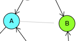

On an open area on the canvas, press the [Ctrl] key and [left-click].
Point to a Node, press the [Ctrl] key and [left-click]. Removing a Node removes all outgoing and incoming edges and clears the content of the auxiliary data structures.
Point to a Node and [drag] it to a new position on the canvas. The Node remains attached to the Graph and preserves all its properties.
Hover over a Node and [scroll down] the mouse wheel to loop through five predefined colors: [blue, red, green, magenta, yellow] or [scroll up] to reset the color of the Node to the default gray.
Hover over a Node, press the [Ctrl] key and [scroll up] or [scroll down] the mouse wheel. The label of the Node will loop through available letters in the range [1-9A-Z]. If no letter is available, the default '?' label will be used.

Point to a Node and press [Ctrl] key while [draging] a line over to another Node. A directional Edge will connect the first Node to the second one, or, if the Edge existed already, it will be removed.
Point to a Node and press [Ctrl] and [Shift] keys while [draging] a line over to another Node. A bi-directional Edge will connect the first Node to the second one, or, if the Edge existed already, it will be removed.
Hover in proximity of an Edge and [scroll down] the mouse wheel to loop through five predefined colors: [blue, red, green, magenta, yellow] or [scroll up] to reset the color of the Edge to the default gray.